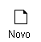
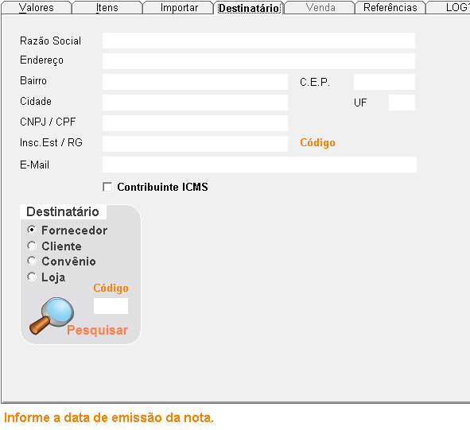
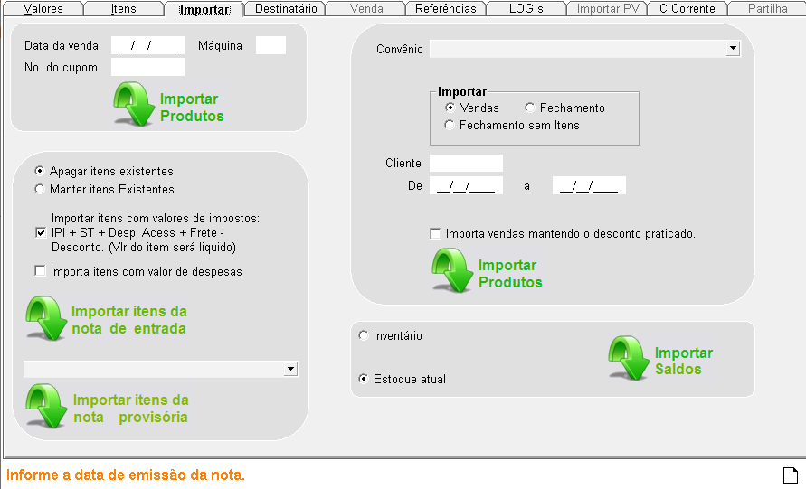
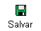
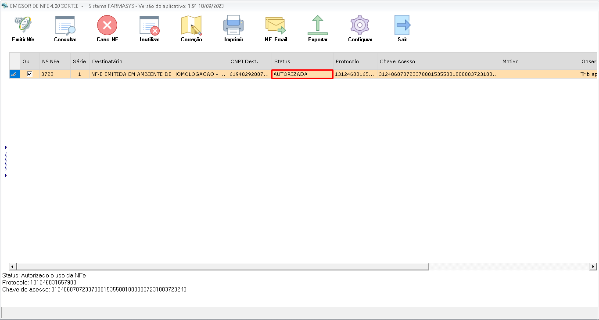

A nota fiscal de saída é um documento fiscal obrigatório que comprova a venda de medicamentos, produtos farmacêuticos e outros itens comercializados pela farmácia. Ela registra todas as informações relevantes sobre a transação, como os produtos vendidos, os valores, os impostos e os dados do comprador.
+1º Passo
Para poder criar uma nota fiscal, clique em novo.

Após preencher os dados iniciais, acesse a tela de valores e pressione a tecla Enter duas vezes. Essa ação irá preencher automaticamente os campos "Modelo" e "Série" com as informações padrão do sistema. Em seguida, selecione a natureza da operação. As opções mais comuns incluem:
- Devolução de venda para cliente: Utilizada quando o cliente devolve um produto.
- Devolução de mercadoria para fornecedor: Empregada para retornar produtos ao fornecedor.
- Nota fiscal de perda: Emitida em caso de perda ou extravio de mercadorias.
- Cobertura de cupom fiscal: Utilizada para emitir uma nota fiscal que complementa um cupom fiscal.
"É importante escolher a natureza da operação correta para que os cálculos dos impostos e as demais informações da nota fiscal sejam gerados de forma precisa."

+2º Passo
Em seguida, informe o Destinatário da nota. Para isso, utilize a ferramenta de busca para localizar o cliente, convênio, fornecedor ou loja desejado. É fundamental que o destinatário já esteja cadastrado no sistema para que a nota fiscal seja emitida corretamente.

+3º Passo
Nesta tela, você pode importar os produtos que farão parte da sua nota fiscal. Para facilitar a seleção dos itens, o sistema oferece diversos filtros de busca:
- Produtos vendidos em determinado período: Ideal para devoluções de venda ou cobertura de cupons, permitindo localizar rapidamente os itens comercializados em um intervalo de tempo específico.
- Produtos de entrada por fornecedor: Utilizado para devoluções de compras, facilitando a identificação dos produtos adquiridos de um determinado fornecedor.
- Produtos de convênio: Perfeito para o fechamento mensal de convênios, permitindo importar todos os produtos vendidos para um convênio específico.
- Estoque atual: Importa todos os produtos disponíveis em estoque, útil para notas fiscais que envolvem a venda de todo o estoque da farmácia.

+4º Passo
- Na aba de itens, é possível realizar o lançamento manual de produtos. Utilize a aba 'Lançamento de Produto' para adicionar itens à nota fiscal de forma individual.

- A lista de produtos exibe todos os itens que farão parte da nota fiscal.

+5º Passo
- Após clicar em

, o sistema oferecerá a opção de realizar o check-in dos produtos para confirmar a sua integridade e quantidade. Essa etapa é opcional. Ao confirmar a nota fiscal, ela será incluída na fila de transmissão.
- Para transmitir a nota fiscal, acesse a tela de
 . Selecione a nota desejada e clique em 'Transmitir NF-e'. Em seguida, escolha a transportadora responsável pela entrega da mercadoria. Na maioria dos casos, a opção 'Própria' pode ser selecionada. Confirme a sua escolha.
. Selecione a nota desejada e clique em 'Transmitir NF-e'. Em seguida, escolha a transportadora responsável pela entrega da mercadoria. Na maioria dos casos, a opção 'Própria' pode ser selecionada. Confirme a sua escolha.

- Você será direcionado para a tela de transmissão da nota fiscal. Clique em 'Emitir NF-e' e confirme a operação.

- Se esta for a sua primeira emissão de nota fiscal, o sistema solicitará a confirmação do seu certificado digital. Clique em 'Sim' para prosseguir.

- A emissão da nota fiscal está concluída. Verifique o status no sistema:

- Autorizada: A nota está pronta para ser impressa ou enviada eletronicamente.
- Rejeitada: Houve algum erro na emissão. Consulte o detalhamento do motivo da rejeição e corrija as informações antes de tentar emitir novamente.A nota será emitida, confira o status que estará como autorizada ou rejeitada, caso esteja rejeitada é preciso verificar o problema e corrigir, e se estiver autorizada, voce pode imprimir a nota.